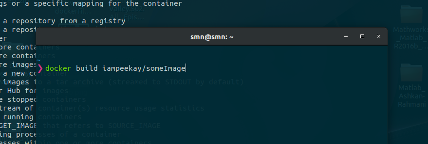
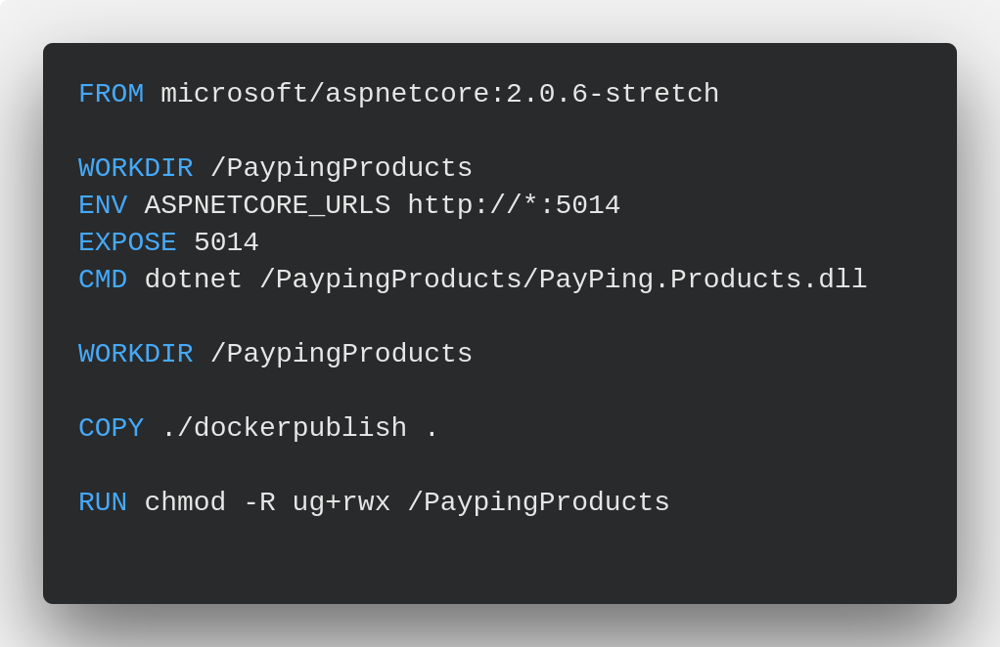

پیشدرآمدی بر استفاده از داکر در توسعه نرمافزارهای تحت میزبانی ابری
اشکان رحمانی
توسعهدهنده سمت سرور
http://ashkanam.ir

درس
یکپارچهسازی سازمانی
زمان:
۳ خرداد ماه
آنچه خواهیم گفت:
داکر چیست:
General Hostings
Containers
Virtual Machines
تفاوت Container و VM:


تاریخچه
داکر
مفهوم Container ها جدید نیست!
برای دههها سیستمهای UNIX از دستور chroot استفاده میکردند
سال ۱۹۹۸ freeBSD ابزار Jail که گسترش داده شده chroot ارائه داد
سال ۲۰۰۱ شرکت Solaris OS تکنولوژی Solais Zones را ارائه داد
در همان سال شرکت Parallels تکنولوژی کانتینرvirtuiozzo را ارائه داد
بعد از آن گوگل برای سالها مخازن cgroup را ارائه داد
سال ۲۰۰۸ پروژه کانتینر لینوکس LXC با ترکیب تکنولوژیهای chroot, cgroup, kernel namespace راهحل کاملتری ارائه داد
تاریخچه
داکر
داکر پروژهای Open-Source
سلیمان هایکس - Solomon Hykes
در فرانسه و در شرکت dotCloud
انتشار اولین نسخه داکر، 0.1.0 در تاریخ ۲۳ مارس ۲۰۱۳
بر پایه لینوکس و با زبان Go
چرا ما به داکر نیاز داریم؟!
اصلا نیاز داریم؟!
سادگی در استفاده
سرعت در توسعه
قابلیت Scalabiity و Modularity
امکان استفاده از Docker Hub
چرا ما به داکر نیاز داریم؟!
اصلا نیاز داریم؟!


معرفی برخی مفاهیم داکر
Docker Engine
Docker Client
Docker Deamon
Dockerfile
Volumes
Docker Containers
استفاده از داکر در عمل
نمونه یک دستور داکر
استفاده از داکر در عمل
نمونه یک Dockerfile
نتیجهگیری
پشتسر گذاشتن روشهای قدیمی میزبانی برنامههای وب
استفاده از فضای ابری برای توسعه برنامهها
استفاده از بستر داکر برای برنامههای تحت وب
هزینه کمتر، بهروری بالاتر!
https://www.docker.com